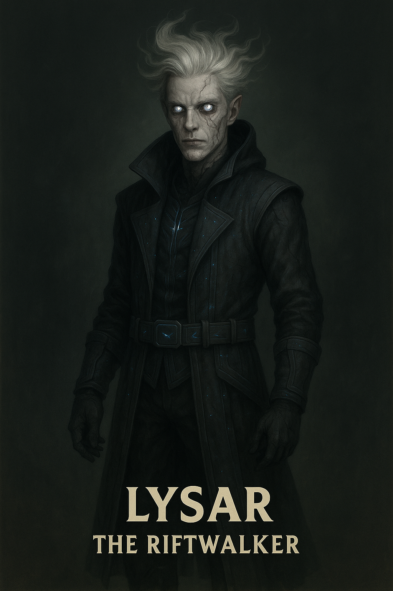

Lysar

Name & Alias: Lysar – The Riftwalker
Age / Race / Role: Unknown / Dimensional Shade / Interdimensional Assassin, Spatial Distorter
Appearance: Tall, cloaked figure with a constantly shifting silhouette. Glowing eyes flicker from different dimensions.
Affinities & Energy Types: Void, Space, Shadow
Threat Tier: S-Rank
Core Stats (0–10):
• Power: 7
• Speed: 9
• Technique: 10
• Intelligence: 9
• Defense: 6
• Aura Control: 9
Signature Abilities:
• Rift Slash
• Dimensional Fade
• Tearstep Ambush
• Void Tunnel Pierce
• Spatial Break Seal
Personality Summary: Cryptic and elusive. Speaks in fragmented echoes from other timelines. Exists between realms.
Faction or Allegiances: Ashborn Circle (Order of the Abyss)